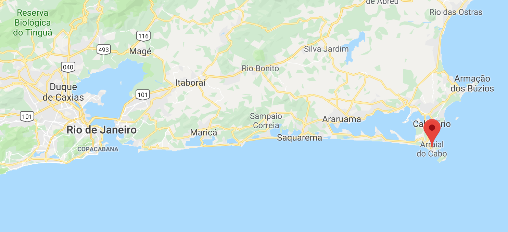
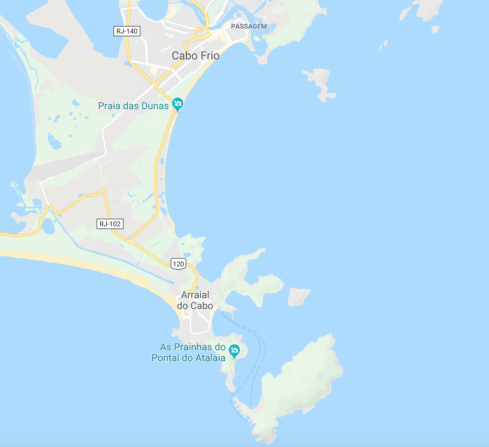

Informations sur la réserve
1 / 2

Arraial do Cabo
2 / 2

Arraial do Cabo
❮
❯
Arraial do Cabo est une municipalité brésilienne de la région des lacs,
dans l'État de Rio de Janeiro. La ville est côtière, et a une altitude moyenne de seulement huit mètres.
Fondée en 1503 par le conquistador Américo Vespúcio, elle ne fut élevée à la ville qu'en 1985,
après l'émancipation de Cabo Frio. En 2014, elle comptait 28 866 habitants selon l'IBGE.
La ville d'Arraial do Cabo, comme son nom l'indique,
est un grand morceau de terre entrant dans la mer, elle a une petite diversité de plages dans les criques,
parmi celles-ci peuvent être considérés comme faisant partit des plus belles plages du monde.
La ville abrite le Porto do Forno, qui est un port de plaisance de par lequel
les produits entrent dans la ville. Idéal pour la plongée,
l'écotourisme est la base de l'économie cabiste. La zone urbaine est très simple et agitée, avec des bâtiments
de seulement deux étages et des rues sinueuses et étroites.
Un concept lié, né dans le cadre des tentatives de définitions de politiques et stratégies
de conservation ou de gestion des ressources naturelles, est celui de « réserve extractiviste »,
système proposé par Chico Mendes et les collecteurs de caoutchouc de l'Acre (Brésil) en 1985 afin de leur
permettre une extraction raisonnable du latex d'Hévéa, tout en garantissant une protection durable de la forêt
(contre la conversion à l'agriculture ou à la sylviculture papetière notamment) et en permettant une participation
des populations locale (promue par le label FSC pour la forêt)15.
Ainsi 4 réserves extractivistes ont été créées en 1990, comme unités de conservation
(deux sont situées dans l'Acre, une dans l'Amapa et l'autre dans le Rondonia, couvrant au total plus
de 2 millions d'hectares et faisant vivre 22 252 personnes qui peuvent vivre en exploitant la forêt qui
appartient à l'État, mais selon une concession de droit d'usage et un plan d'utilisation approuvé par l'Ibama15.
L'Agroforesterie ou l'agrosylviculture et l'écocertification forestière peuvent s'y associer.
Arrail do Cabo est l'une des première reserve extractiviste marine.